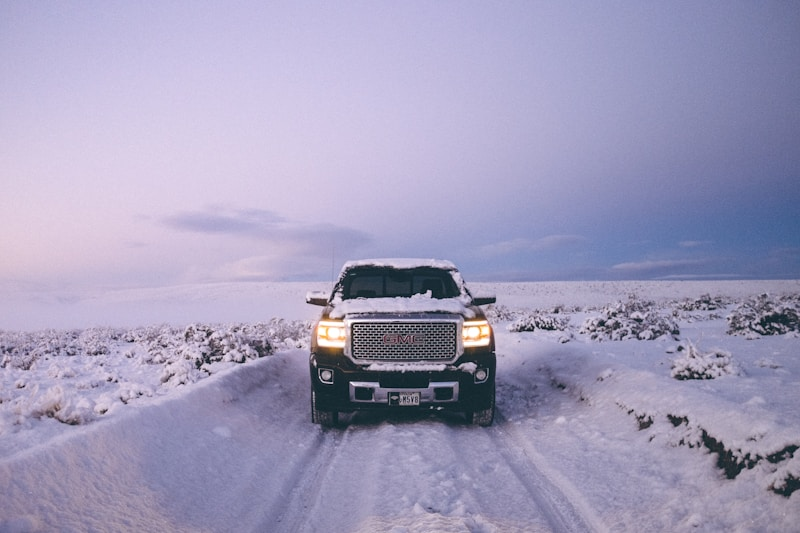

GMC Repair & Service in Cedar Rapids
Trucks and SUVs built to work hard — maintained by technicians who know them inside and out.
Expert GMC Repair in Cedar Rapids
GMC trucks and SUVs are built for capability, but that capability depends on proper maintenance and timely repair. At Cedar Automotive, we service the entire GMC lineup — from the Sierra 1500, 2500HD, and 3500HD heavy-duty trucks to the Terrain compact SUV, Acadia mid-size crossover, Yukon and Yukon XL full-size SUVs, and Canyon mid-size pickup. Whether your GMC hauls a trailer every weekend or handles the daily commute, we keep it running the way it should.
GMC vehicles share platforms and powertrains with Chevrolet, but they come with their own trim-specific electronics, suspension tuning, and feature sets. The Denali and AT4 packages add adaptive ride control, magnetic ride damping, heads-up displays, and advanced infotainment systems that require proper diagnostic coverage to service correctly. Our technicians understand the differences between trim levels and model years, so your GMC gets the right repair — not a generic one.
We also specialize in Duramax diesel service for Sierra HD and Canyon diesel models. From routine fuel filter changes and DEF system maintenance to injector diagnostics and turbo inspection, we have the tools and experience to keep your diesel GMC on the road. Cedar Automotive is conveniently located in Cedar Rapids near the regional airport and serves GMC owners throughout Eastern Iowa.
GMC Services We Provide
- Full-synthetic oil change service for all GMC gas and diesel engines
- Brake pad and rotor replacement — including heavy-duty truck brakes
- Engine diagnostics and repair including AFM/DFM lifter service
- Transmission fluid service and repair for 8-speed, 10-speed, and Allison units
- Electrical diagnostics and IntelliLink infotainment troubleshooting
- Suspension and steering service — shocks, struts, ball joints, tie rods
- 4WD and AWD system service — transfer case, front and rear differentials
- Duramax diesel maintenance — fuel system, DEF, turbo, glow plugs, injectors
- Car key and key fob programming

Why Choose Us for Your GMC?
Truck & SUV Specialists
From half-ton Sierra 1500s to one-ton 3500HD Duramax diesels, we have the heavy-duty lifts, tooling, and diagnostic equipment to handle GMC trucks and SUVs of every size.
Honest Communication
We explain every repair in plain language, show you the failed parts, and never push work your GMC does not need. You approve everything before we turn a wrench.
Factory-Level Diagnostics
Our professional-grade scan tools communicate with every GMC module — engine, transmission, transfer case, body control, and infotainment — to pinpoint problems accurately.
Common GMC Issues We Repair
AFM/DFM Lifter Failure
Active Fuel Management and Dynamic Fuel Management systems on GMC V8 engines are prone to lifter collapse, causing misfires, ticking noises, and check engine lights. We diagnose which cylinders are affected using manufacturer scan data and replace the failed lifters, VLOM assembly, and related valve train components to restore proper engine operation.
Transmission Shudder (8 & 10-Speed)
The 8L90 and 10L80/10L90 automatic transmissions used in Sierra and Yukon models are known for torque converter shudder, harsh shifts, and hesitation. In many cases a fluid flush with the updated GM specification fluid resolves the issue. When it does not, we diagnose and repair the torque converter or valve body as needed.
Fuel Injector Problems
Direct-injection GMC engines can develop fuel injector failures that cause misfires, rough idle, and poor fuel economy. Carbon buildup on intake valves is also common with direct injection. We test injectors individually, replace failed units, and can perform intake valve cleaning to restore performance.
AC Condenser Leaks
GMC trucks and SUVs — especially Sierra and Yukon models — are prone to AC condenser failures from road debris and stone damage. A leaking condenser means the system cannot hold refrigerant, leaving you without cold air. We locate the leak, replace the condenser, and recharge the system properly.
Transfer Case Issues
Four-wheel-drive GMC trucks can develop transfer case encoder motor failures, chain wear, and fluid leaks. Symptoms include grinding noises when engaging 4WD, service 4WD warning messages, and difficulty shifting between 2WD and 4WD. We diagnose the system electronically and mechanically to identify the exact failure.
Brake Rotor Warping
The heavy weight of GMC trucks puts significant stress on brake rotors, especially when towing. Warped rotors cause pulsation in the brake pedal and steering wheel vibration during braking. We resurface or replace rotors as needed and install quality pads rated for the demands of truck and towing use.
Related Services
Frequently Asked Questions
What GMC models do you service?
Cedar Automotive services the full GMC lineup including the Sierra 1500, 2500HD, and 3500HD trucks, Terrain and Acadia SUVs, Yukon and Yukon XL full-size SUVs, and Canyon mid-size trucks. We work on both gasoline and Duramax diesel powertrains across all model years.
Can you fix the AFM or DFM lifter tick on my GMC Sierra?
Yes. Active Fuel Management and Dynamic Fuel Management lifter failure is one of the most common issues we see on GM trucks. We diagnose which lifters have collapsed using manufacturer-specific scan data and can replace the affected lifters, VLOM assembly, and related components to restore proper engine operation.
Do you work on Duramax diesel GMC trucks?
Absolutely. We service all generations of the Duramax diesel including fuel system maintenance, DEF system diagnosis, turbo inspection, injector testing, and emissions system repairs. We carry the diagnostic tools needed to properly communicate with Duramax engine and aftertreatment modules.
Do you program GMC keys and fobs?
Yes — we program GMC keys and key fobs for all models including Sierra, Terrain, Acadia, Yukon, and Canyon. We handle transponder key programming, proximity fob replacement, and all-keys-lost situations at a fraction of dealer cost. Call (319) 450-7584 for a quote.